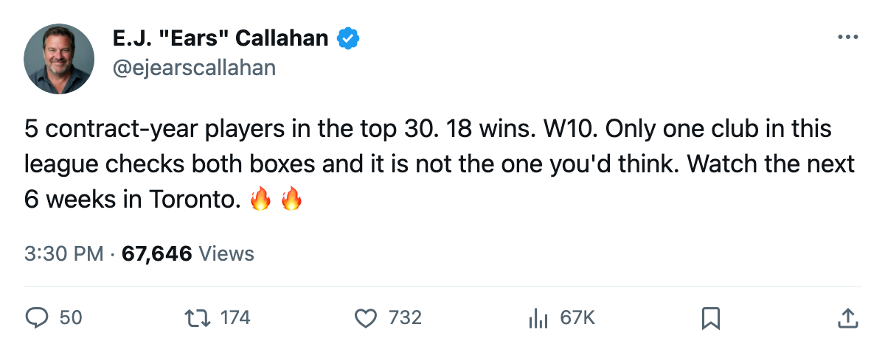
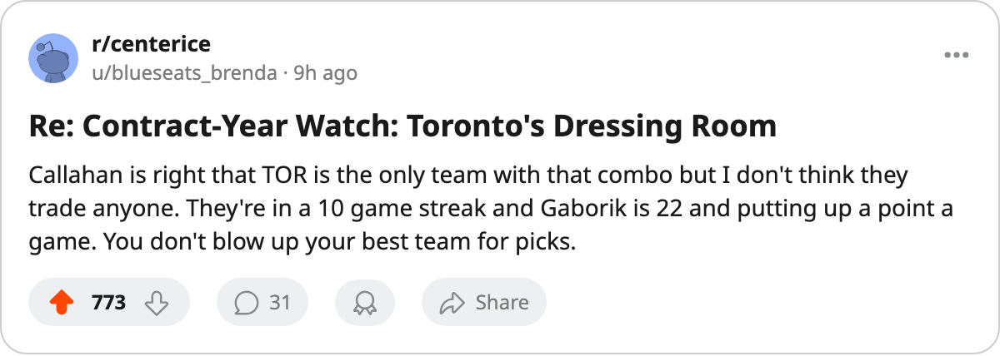

Contract-Year Watch: 5 Expiring Deals and the Best Record in the League. Only One Club Has Both.
No other contender has more than 2 high-end contracts walking at season's end. Toronto has 5, and the Maple Leafs are 18-5-0.
 E.J. "Ears" CallahanInsider · The Hot Stove
E.J. "Ears" CallahanInsider · The Hot Stove

Rumour

The piece
The  Calgary Flames-
Calgary Flames- New Jersey Devils deal confirmed this week was the first trade of the season. Four players moved between the clubs, no draft picks attached. The market is open, and no dressing room in this league holds more value than
New Jersey Devils deal confirmed this week was the first trade of the season. Four players moved between the clubs, no draft picks attached. The market is open, and no dressing room in this league holds more value than  Toronto Maple Leafs.
Toronto Maple Leafs.
The Maple Leafs carry 5 players on one-year deals inside the top 30 by overall grade. That is more than any other team with a winning record. Toronto sits at 40 points on 25 games, 18-5-0, riding a 10-game win streak.
 Marian Gaborik95 headlines the group: 96 overall, 34 points in 25 games, 22 years old, $1.10M. Behind him:
Marian Gaborik95 headlines the group: 96 overall, 34 points in 25 games, 22 years old, $1.10M. Behind him:  Ed Belfour91, 92 at 39, $6.50M, out through 2004-12-05.
Ed Belfour91, 92 at 39, $6.50M, out through 2004-12-05.  Gary Roberts85, 38, 86, 32 points, $2.70M.
Gary Roberts85, 38, 86, 32 points, $2.70M.  Brad Richards84, 24, 85, 27 points, $1.00M.
Brad Richards84, 24, 85, 27 points, $1.00M.  David Aebischer84, 85, $0.50M, the only one of the 5 whose morale dips below 80.
David Aebischer84, 85, $0.50M, the only one of the 5 whose morale dips below 80.
 Los Angeles Kings has 4 contract-year names in the top 30 but sits at 23 points.
Los Angeles Kings has 4 contract-year names in the top 30 but sits at 23 points.  Chicago Blackhawks also has 4 and has 21 points.
Chicago Blackhawks also has 4 and has 21 points.  Dallas Stars has 2 (
Dallas Stars has 2 ( Marty Turco96, 96, and
Marty Turco96, 96, and  Brenden Morrow86, 86, 35 points in 27 games) and 35 points. Toronto is the only contender with volume and winning in the same column.
Brenden Morrow86, 86, 35 points in 27 games) and 35 points. Toronto is the only contender with volume and winning in the same column.
The Maple Leafs are profitable at $28.75M, hold  Detroit Red Wings's first-round pick (the Red Wings have spent $80.89M for 26 points and a 5-game losing streak), and carry 5 total picks in the draft. The Leafs face no external pressure to sell. But Belfour is 39 and Roberts is 38, and neither returns at current numbers. The only path to keeping Gaborik runs through an extension Toronto can afford and has not yet committed to.
Detroit Red Wings's first-round pick (the Red Wings have spent $80.89M for 26 points and a 5-game losing streak), and carry 5 total picks in the draft. The Leafs face no external pressure to sell. But Belfour is 39 and Roberts is 38, and neither returns at current numbers. The only path to keeping Gaborik runs through an extension Toronto can afford and has not yet committed to.

A source close to the club says the room knows what it has. "You feel it every night, the knowledge that this group won't be together next year," the source said. "Nobody says it out loud. But everyone knows."
The trade window just cracked open. If a team wants to make a move before February and has first-round capital and salary room, the Maple Leafs are the only club in this league that can field an offer without needing the answer to be yes.

